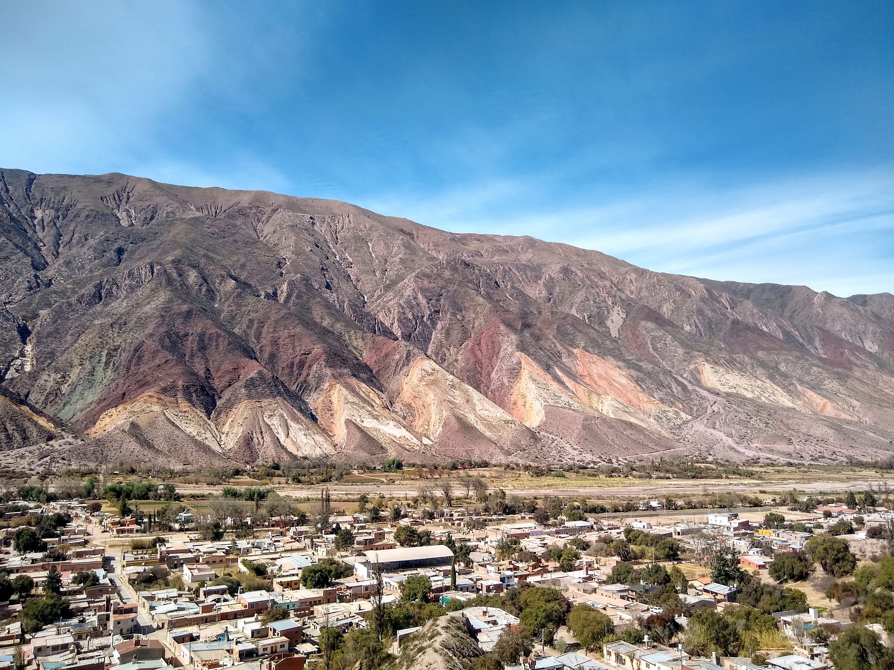
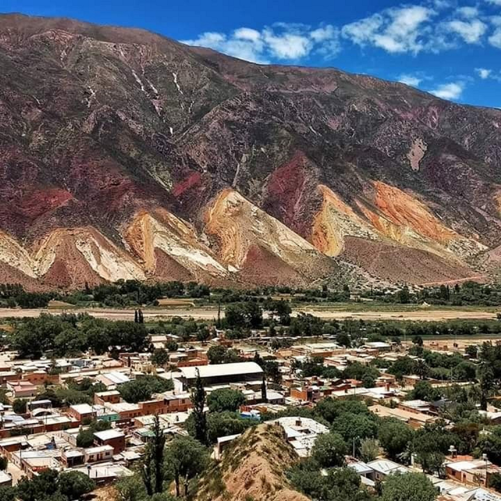
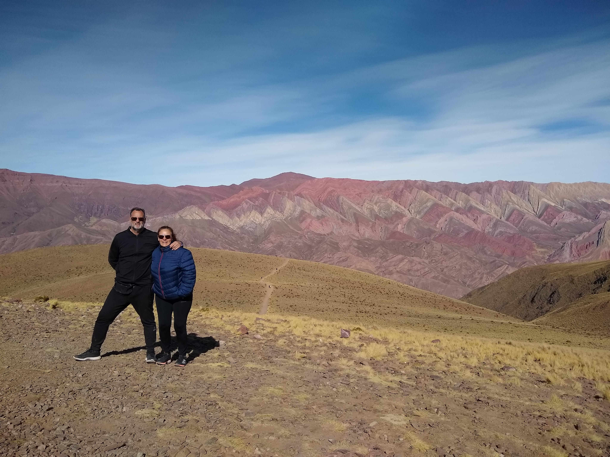
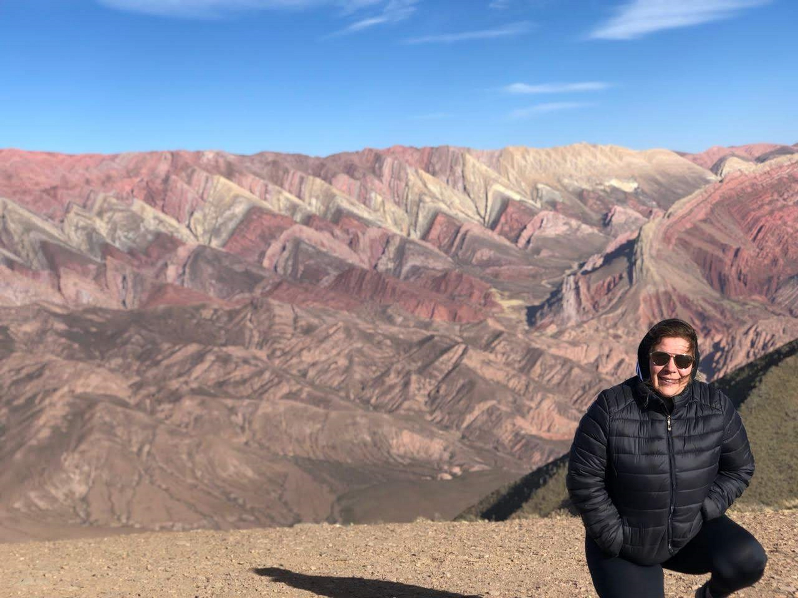
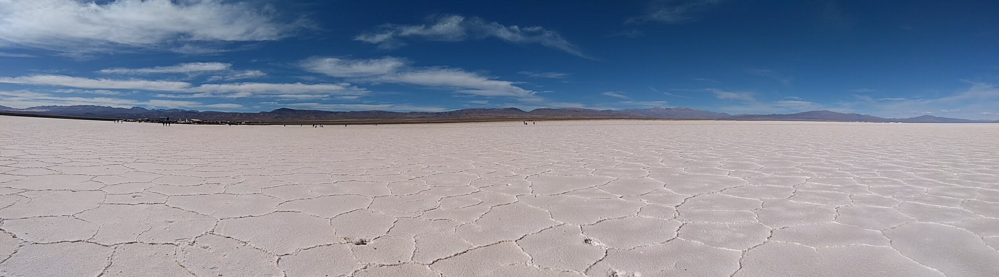

Maimara
Su entorno geográfico pertenece a la quebrada de Humahuaca, y tiene como característica principal la policromía de sus cerros.
|  |  |
Paleta del Pintor |
Paleta del Pintor |
Humahuaca
La Quebrada de Humahuaca es la combinación perfecta entre paisaje espectacular y riqueza arqueológica.
|  |  |
El Hornocal - Cerro de 14 colores |
El Hornocal - Cerro de 14 colores/p> |
Salinas Grandes
Su origen es volcánico de hace aproximadamente 10 millones de años, cuando chocaron las placas tectónicas del continente con el pacífico.
|  | |
Salina Grande |
Salina Grande |